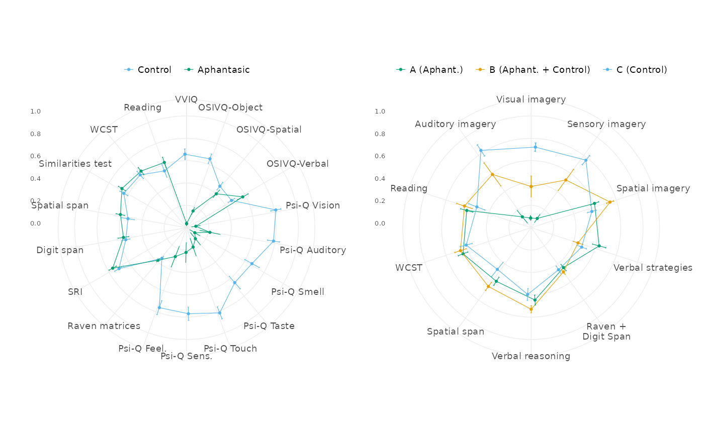
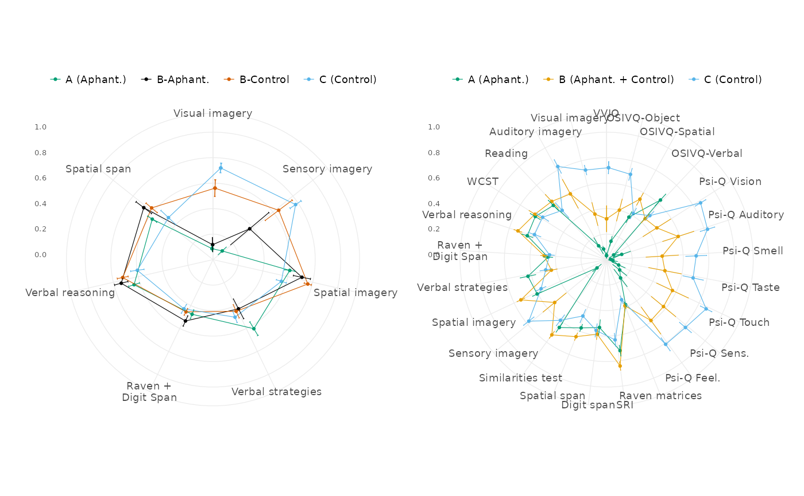

This function plots the scaled score variables as radar charts using the
superb package. It can plot radars for any combination of the Group,
Cluster, or Subcluster grouping variables and selections of original or
reduced study variables, typically obtained through get_longer() and
filter_study_variables() (see examples).
The function allows for customisation of the radar charts with various options. Note that the default sizes are pretty small, this was designed to render best as small dimension PDF vector figures for journals.
Usage
plot_score_radars(
df,
groups,
txt_big = 7,
txt_smol = 5,
dot_size = 0.8,
lw_line = 0.2,
lw_error = 0.2,
y_off = 40,
r_off = 0,
l_off = 0,
v_off = 0,
key = 3,
...
)Arguments
- df
A data frame containing the variables to be plotted in long format, with the variable names in a
Variablecolumn and the associated values in avaluecolumn. This is for example the output ofget_longer(study_data).- groups
An grouping variable among
Group,Cluster, orSubcluster. Can be quoted or unquoted. The function will plot a radars for each level of this variable.- txt_big
Size of the text for the x-axis labels. Default is 7.
- txt_smol
Size of the text for the y-axis labels. Default is 5.
- dot_size
Size of the dots in the radar charts. Default is 0.8.
- lw_line, lw_error
Line width for the main plot lines and error bars, respectively. Default is 0.2 for both.
- y_off
Offset for the y-axis text to centre it. Default is 40.
- r_off, l_off, v_off
Right, left and vertical offset for the plot margins. Default is 0 for all three.
- key
Size of the legend key in mm. Default is 3.
- ...
Additional arguments passed to the
superbfunction.
Examples
df_merged_long <- merge_clusters(
df_raw = study_data,
df_red = scale_reduce_vars(study_data),
clustering = cluster_selected_vars(study_data)
) |>
scale_vars() |>
get_longer()
# Groups on the original variables
p1 <-
df_merged_long |>
filter_study_variables("original") |>
plot_score_radars(Group, r_off = 6, l_off = 6)
# Clusters on the reduced + validation variables
p2 <-
df_merged_long |>
filter_study_variables("reduced") |>
plot_score_radars(Cluster, r_off = 6, l_off = 6)
# Subclusters on the reduced variables
p3 <-
df_merged_long |>
filter_study_variables("reduced_strict") |>
plot_score_radars(Subcluster, r_off = 6, l_off = 6)
# Clusters on all the variables
p4 <- df_merged_long |> plot_score_radars(Cluster, r_off = 6, l_off = 6)
if (require("patchwork", quietly = TRUE)) {
print(p1 + p2)
print(p3 + p4)
} else print(p1)

